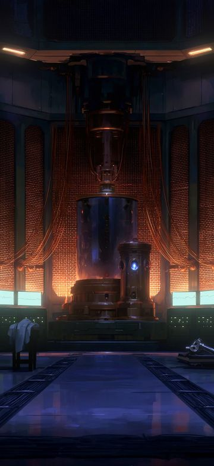
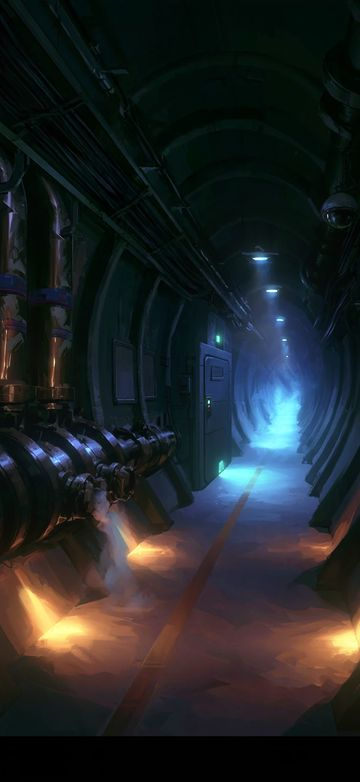
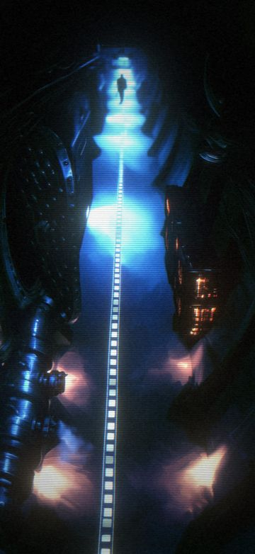
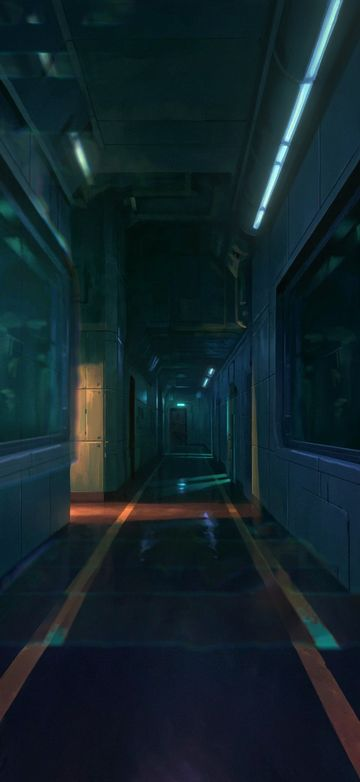
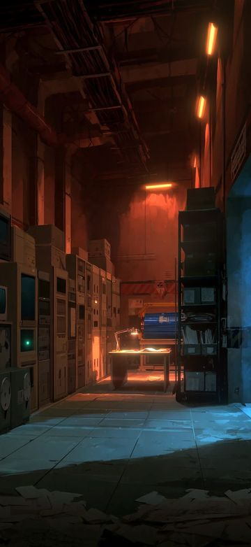
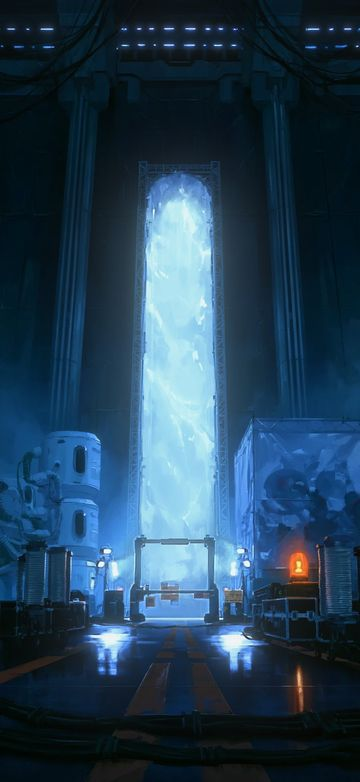
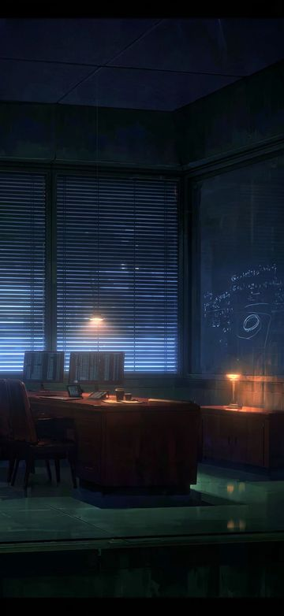
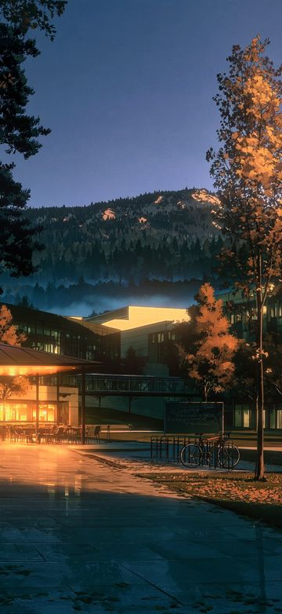

Первая история
«Интерференция»
2046 год. В ЦЕРНе запускают ASTERION — крупнейший научный прибор Европы. В первую же смену коллайдер получает данные экспериментов, которых ещё не было, и кадры с людьми, которых уже нет.
Мира Коваль шла к этому запуску всю жизнь — с того вечера, когда дедушка показал ей Юпитер в телескоп. Теперь ей предстоит понять, что именно она видит, и решить, кому можно доверять.
Локации
Восемь из четырнадцати живых фонов первой главы.








Персонажи
Наведите или нажмите на героя, чтобы увидеть другую эмоцию.
 Мира Ковальфизик ASTERION, главная героиня
Мира Ковальфизик ASTERION, главная героиня Элиас Хартманнруководитель группы
Элиас Хартманнруководитель группы Адриан ВоссHelix Quantum Systems
Адриан ВоссHelix Quantum Systems Самира Рахальинженер Q-Lattice
Самира Рахальинженер Q-Lattice Виктор Ковальдедушка Миры
Виктор Ковальдедушка Миры